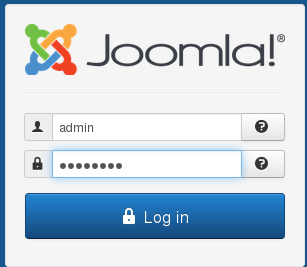
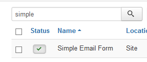
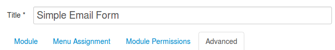
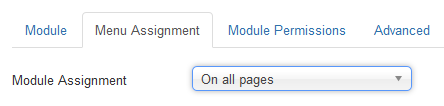

Installation¶
Here is the installation procedure for Joomla 3.x. The procedure is very similar for Joomla 2.5, but the screens look slightly different.
Download the module on the Simple Email Form page.
Login as the Joomla administrator
Select Extensions - Manage - Install
Click on Browse and locate the Simple Email Form TAR.GZ file you downloaded.
Click Upload & Install
You should see a friendly message indicating success.
Select Extensions - Manage - Manage
Make sure the Simple Email Form’s Status is Published (green check in the Status column).
Click on Extensions - Modules.

Click on Simple Email Form in the Title column to edit the module.
You can edit the Title as desired.
In Position (right column of the Module tab), either select a module position as indicated by your template or enter a custom position (e.g. user99) if you plan to load the module into an article.

In the Menu Assignment tab, make sure the module is assigned to either On all pages or to the pages you choose.
SAVE your changes.
If you plan to load the module into an article,
click on Close, then choose Extensions - Plugins
Make sure that the Content - Load Modules plug-in is enabled.

You are now ready to configure the basic options in the Module tab and the advanced options in the Advanced tab.